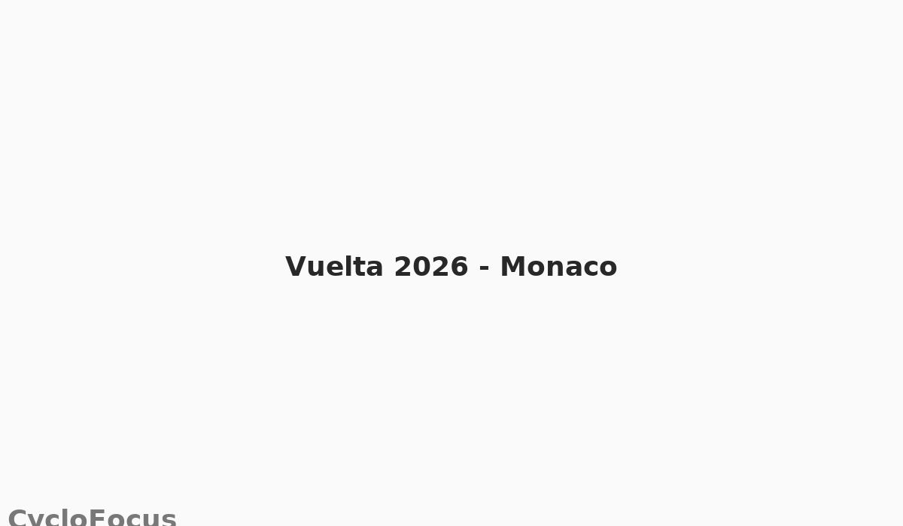

Vuelta 2026: tappa iniziale a Monaco
Gli organizzatori della Vuelta 2026 hanno confermato Monaco come sede del Grand Départ. La scelta punta a valorizzare percorsi spettacolari e una platea internazionale.
Gli organizzatori della Vuelta 2026 hanno confermato Monaco come sede del Grand Départ. La scelta punta a valorizzare percorsi spettacolari e una platea internazionale.